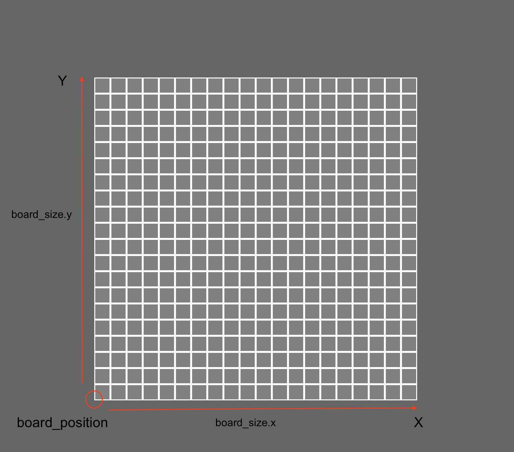
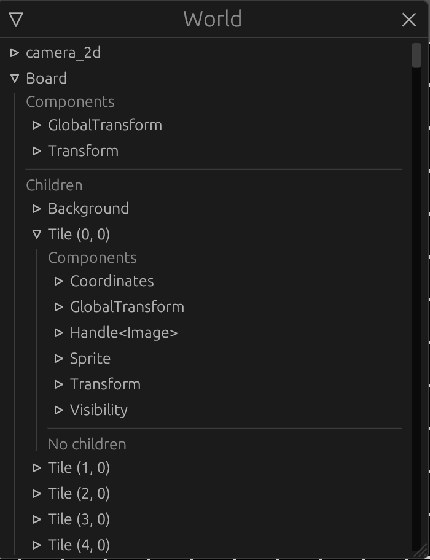

The Board
We have our tile map but still nothing on screen, let's create some tiles !
Board options
To comply with our objective of making a completely modular plugin we must first provide generation options.
We will now create a nice configuration resource like bevy's WindowDescriptor we saw in Part 1.
Create a board_options module in our plugin
├── Cargo.toml
└── src
├── components
│ ├── coordinates.rs
│ └── mod.rs
├── lib.rs
└── resources
├── board_options.rs
├── mod.rs
├── tile.rs
└── tile_map.rs
and add it to the mod.rs file:
#![allow(unused)] fn main() { // .. pub use board_options::*; mod board_options; }
We want the following options:
- All tile map options (width, height and bomb count)
- Custom Padding between tile sprites
- Custom tile size or window adaptive size
- Custom board world position or window centered with optional offset
- Optional safe uncovered start zone
That's a lot !
It is, but the more, the merrier ! Let's do this:
#![allow(unused)] fn main() { // board_options.rs use bevy::prelude::Vec3; use serde::{Deserialize, Serialize}; /// Tile size options #[derive(Debug, Clone, Serialize, Deserialize)] pub enum TileSize { /// Fixed tile size Fixed(f32), /// Window adaptative tile size Adaptive { min: f32, max: f32 }, } /// Board position customization options #[derive(Debug, Clone, Serialize, Deserialize)] pub enum BoardPosition { /// Centered board Centered { offset: Vec3 }, /// Custom position Custom(Vec3), } /// Board generation options. Must be used as a resource // We use serde to allow saving option presets and loading them at runtime #[derive(Debug, Clone, Serialize, Deserialize)] pub struct BoardOptions { /// Tile map size pub map_size: (u16, u16), /// bomb count pub bomb_count: u16, /// Board world position pub position: BoardPosition, /// Tile world size pub tile_size: TileSize, /// Padding between tiles pub tile_padding: f32, /// Does the board generate a safe place to start pub safe_start: bool, } }
This seems complex but if we implement good Default implementations our the options will be very easy to use
#![allow(unused)] fn main() { // board_options.rs impl Default for TileSize { fn default() -> Self { Self::Adaptive { min: 10.0, max: 50.0, } } } impl Default for BoardPosition { fn default() -> Self { Self::Centered { offset: Default::default(), } } } impl Default for BoardOptions { fn default() -> Self { Self { map_size: (15, 15), bomb_count: 30, position: Default::default(), tile_size: Default::default(), tile_padding: 0., safe_start: false, } } } }
let's register our new resource to our app:
// main.rs
+ use board_plugin::resources::BoardOptions;
fn main() {
let mut app = App::new();
// Window setup
app.insert_resource(WindowDescriptor {
title: "Mine Sweeper!".to_string(),
width: 700.,
height: 800.,
..Default::default()
})
// Bevy default plugins
.add_plugins(DefaultPlugins);
#[cfg(feature = "debug")]
// Debug hierarchy inspector
app.add_plugin(WorldInspectorPlugin::new());
+ // Board plugin options
+ app.insert_resource(BoardOptions {
+ map_size: (20, 20),
+ bomb_count: 40,
+ tile_padding: 3.0,
+ ..Default::default()
+ })
.add_plugin(BoardPlugin)
// Startup system (cameras)
.add_startup_system(camera_setup);
// Run the app
app.run();
}
Board generation
Now that we have a generation option resource, let's use in our plugin to build our first board.
Let's edit our create_board startup system:
Params and tile map
#![allow(unused)] fn main() { // lib.rs use resources::BoardOptions; // .. pub fn create_board( mut commands: Commands, board_options: Option<Res<BoardOptions>>, window: Res<WindowDescriptor>, ) {} }
Notice we added parameters to our system:
Commandsas we will spawn entities and componentsOption<Res<BoardOption>>is our new generation option resource, but optional !Res<WindowDescriptor>is the window configuration resource we set up in ourmain.rs
/!\ At the time of writing this tutorial I realized that since the WindowDescriptor resource is optional our system will panic if no window configuration is set up.
A better practice would be to use it in an Option<> like our BoardOptions or access the Windows resource directly.
Since our generation options are optional we need to use the Default implementation if it is not set:
#![allow(unused)] fn main() { // .. let options = match board_options { None => BoardOptions::default(), // If no options is set we use the default one Some(o) => o.clone(), }; }
We can now generate our tile map:
#![allow(unused)] fn main() { // .. // Tilemap generation let mut tile_map = TileMap::empty(options.map_size.0, options.map_size.1); tile_map.set_bombs(options.bomb_count); #[cfg(feature = "debug")] // Tilemap debugging log::info!("{}", tile_map.console_output()); }
Tile size
We added options for the tile size, and one determining tile size according to the window. If the option is selected we must compute the tile size between the window, and the tile map dimensions.
Add the following method to BoardPlugin:
#![allow(unused)] fn main() { // lib.rs /// Computes a tile size that matches the window according to the tile map size fn adaptative_tile_size( window: Res<WindowDescriptor>, (min, max): (f32, f32), // Tile size constraints (width, height): (u16, u16), // Tile map dimensions ) -> f32 { let max_width = window.width / width as f32; let max_heigth = window.height / height as f32; max_width.min(max_heigth).clamp(min, max) } }
Let's use it in our create_board system:
#![allow(unused)] fn main() { // lib.rs use resources::TileSize; // .. // We define the size of our tiles in world space let tile_size = match options.tile_size { TileSize::Fixed(v) => v, TileSize::Adaptive { min, max } => Self::adaptative_tile_size( window, (min, max), (tile_map.width(), tile_map.height()), ), }; }
Board creation
We can now compute the board world size and world_position
#![allow(unused)] fn main() { // lib.rs use resources::BoardPosition; // .. // We deduce the size of the complete board let board_size = Vec2::new( tile_map.width() as f32 * tile_size, tile_map.height() as f32 * tile_size, ); log::info!("board size: {}", board_size); // We define the board anchor position (bottom left) let board_position = match options.position { BoardPosition::Centered { offset } => { Vec3::new(-(board_size.x / 2.), -(board_size.y / 2.), 0.) + offset } BoardPosition::Custom(p) => p, }; }
That's a weird computation
I make the choice here to anchor the board at the bottom left instead of the center in order to place all the tile children in positive relative positions.

The actual board object will be on the bottom left of the visible board
We can now create our board:
#![allow(unused)] fn main() { // lib.rs // .. commands .spawn() .insert(Name::new("Board")) .insert(Transform::from_translation(board_position)) .insert(GlobalTransform::default()); }
If we run the app we now have an empty board with three components:
- a
Name(which will be used by the inspector GUI) - a
Transform, which describe its local translation, scale and rotation - a
GlobalTransformwhich describes the same values asTransformbut globally
Note that we have to create both Transform and GlobalTransform but we never set the global one.
If one is missing, the entire hierarchy will not behave as expected.
Let's create the Board background: Add the following to the spawn code
#![allow(unused)] fn main() { // lib.rs // .. .with_children(|parent| { // We spawn the board background sprite at the center of the board, since the sprite pivot is centered parent .spawn_bundle(SpriteBundle { sprite: Sprite { color: Color::WHITE, custom_size: Some(board_size), ..Default::default() }, transform: Transform::from_xyz(board_size.x / 2., board_size.y / 2., 0.), ..Default::default() }) .insert(Name::new("Background")); }); }
So what is happening here:
First we use with_children, giving us a builder similar to Commands but to spawn children objects to our Board.
Then we spawn a new "Background" entity with a SpriteBundle (note that all built-in Component Bundles already have Transform and GlobalTransform components):
sprite: we create a basic rectangle of the size of our board with a white color.transform: Sprite anchors are centered, since we put our board to the bottom left, we want to put this background in the center of the board.

The background is positioned in the center
Let's spawn the tiles !
#![allow(unused)] fn main() { // lib.rs use components::Coordinates; // .. .with_children(|parent| { // .. // Tiles for (y, line) in tile_map.iter().enumerate() { for (x, tile) in line.iter().enumerate() { parent .spawn_bundle(SpriteBundle { sprite: Sprite { color: Color::GRAY, custom_size: Some(Vec2::splat( tile_size - options.tile_padding as f32, )), ..Default::default() }, transform: Transform::from_xyz( (x as f32 * tile_size) + (tile_size / 2.), (y as f32 * tile_size) + (tile_size / 2.), 1., ), ..Default::default() }) .insert(Name::new(format!("Tile ({}, {})", x, y))) // We add the `Coordinates` component to our tile entity .insert(Coordinates { x: x as u16, y: y as u16, }); } } } }
We iterate through the tile map and spawn a new entity for each tile using a SpriteBundle again. We also add a Coordinates component for each tile.
Note that for the z value of the Transform we put 1., so the tile is closer to the camera than the background, and therefore printed on top of the background.
Let's run our app with the debug feature
cargo run --features debug

Our board is generated and we can observe the difference between Transform and GlobalTransform.
- Our board entity
TransformandGlobalTransformare identical because this entity doesn't have a parent - Our tiles
Transformtranslation are relative to their parent, the board entity, giving the real translation in theGlobalTransformcomponent.
Author: Félix de Maneville Follow me on Twitter